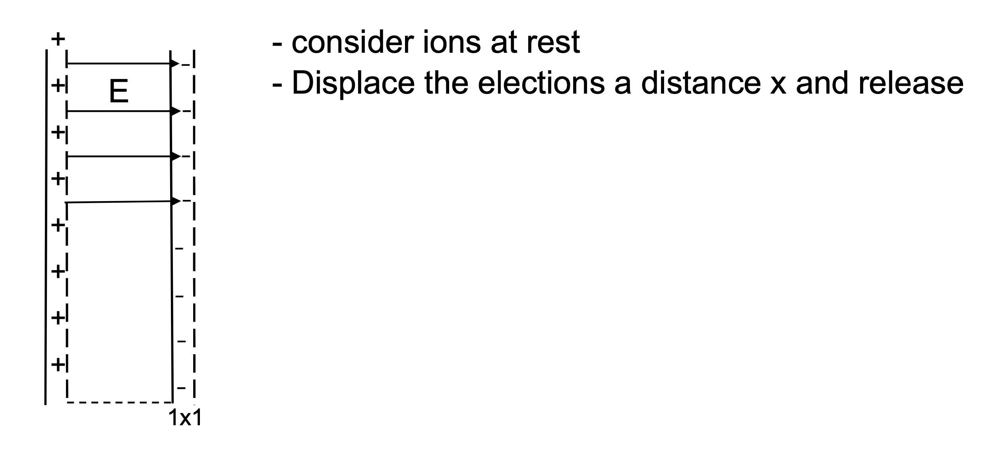

Oscillations
Collision Frequencies
Gases have three degrees of freedom to oscillate, but plasmas have four: the electron fluid adds an additional parameter.
One way to see how the electron fluid oscillates, take a region of plasma and displace the electrons by a distance and release. Then, watch how the electrons oscillate.

Gauss's law gives the resulting electric field (same as a parallel-plate capacitor.
The restoring force is therefore
We know forces of that form. When released, it will undergo simple harmonic motion
We define the plasma frequency as
If we take the displacement out to then the peak velocity is the electron thermal speed
Taking a look back at the collision frequencies, the electron-electron collision frequency (associated with the energy transfer) is close to the electron-ion collision frequency associated with momentum transfer, and both are about
So the electron-electron collision frequency will be much less than the plasma frequency if
Radiation
Cyclotron radiation
As an electron moves through a magnetic field, it takes a helical path. The acceleration is
Only the component of perpendicular to can cause radiation in the direction.
-pinch
Called theta-pinch because current is in the direction. The magnetic field is constant within the plasma, and constant outside the plasma (inside the device).
Z-pinch
Talk about a Z-pinch that's stationary and compressing. Assume T is a constant (burning through). The radiated power is then
The ohmic heating goes like
So the key parameter in the ratio is .
There is no so we need to balance the pressure as well.
Consider ohmically heating a pure Z-pinch like FRC or ZaP.
First, assume that the power radiated per unit volume goes like
The dependence is true for a fixed impurity fraction for line radiation in steady state, and for Bremsstrahlung.
Ignore dependency in ohmic heating so
The pressure balance demands
For Bremsstrahlung temperature and density dependence are
Pressure balance
So if we're going to get any heating, we need the ohmic heating to be greater than the radiation
using
Density cancels out, and we're left with a current term () called the Pease current
Z-pinch radiatively collapses above 1MA for Bremsstralung radiation. Counter-intuitively, the current must be less than the Pease current in order to continue heating. There is an even lower current for line radiation going up through the burn-through curve.
Skin Depths in Plasma
Two types of skin depths in plasma: collisional and collisionless
Collisionless skin depth is due to electron inertia, which allows the field to penetrate even if it is very hot and a good conductor. What is magnitude? Look at E production and B shielding
Electrons accelerate with E
Doing a wave analysis assuming spatial solutions that decay off as and oscillate with frequency , we have
That's the dispersion relation for our wave solutions. Plugging in
That lets us identify the electron plasma frequency